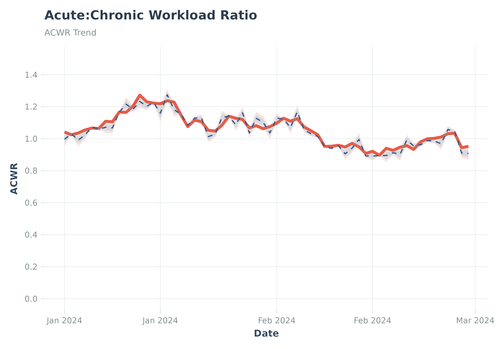

Adds percentile reference bands from a cohort to an individual's metric plot.
Arguments
- p
A ggplot object (typically from plot_acwr or similar).
- reference_data
A data frame from
calculate_cohort_reference().- bands
Character vector specifying which bands to plot. Options: "p25_p75" (inner quartiles), "p05_p95" (outer 5-95 range), "p50" (median). Default c("p25_p75", "p05_p95", "p50").
- alpha
Transparency for reference bands (0-1). Default 0.15.
- colors
Named list of colors for bands. Default uses Nature-inspired palette colors.
Examples
# Example: add reference bands to an ACWR plot
set.seed(42)
n <- 60
dates <- seq(as.Date("2024-01-01"), by = "day", length.out = n)
base_acwr <- 1.0 + cumsum(rnorm(n, 0, 0.03))
individual <- data.frame(
date = dates, atl = runif(n, 30, 60), ctl = runif(n, 35, 55),
acwr = base_acwr, acwr_smooth = base_acwr
)
cohort <- dplyr::bind_rows(
dplyr::mutate(individual, athlete_id = "A1"),
dplyr::mutate(individual, athlete_id = "A2",
acwr_smooth = acwr_smooth * runif(n, 0.9, 1.1))
)
ref <- suppressWarnings(
calculate_cohort_reference(cohort, metric = "acwr_smooth", min_athletes = 2)
)
p <- suppressMessages(plot_acwr(individual, highlight_zones = FALSE))
p_ref <- add_reference_bands(p, reference_data = ref)
print(p_ref)
